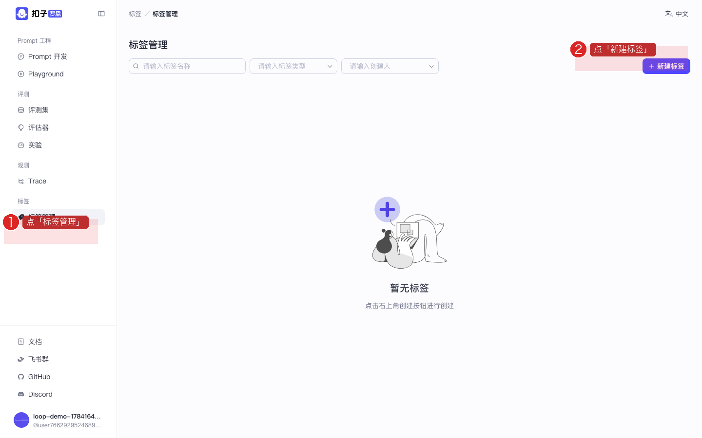
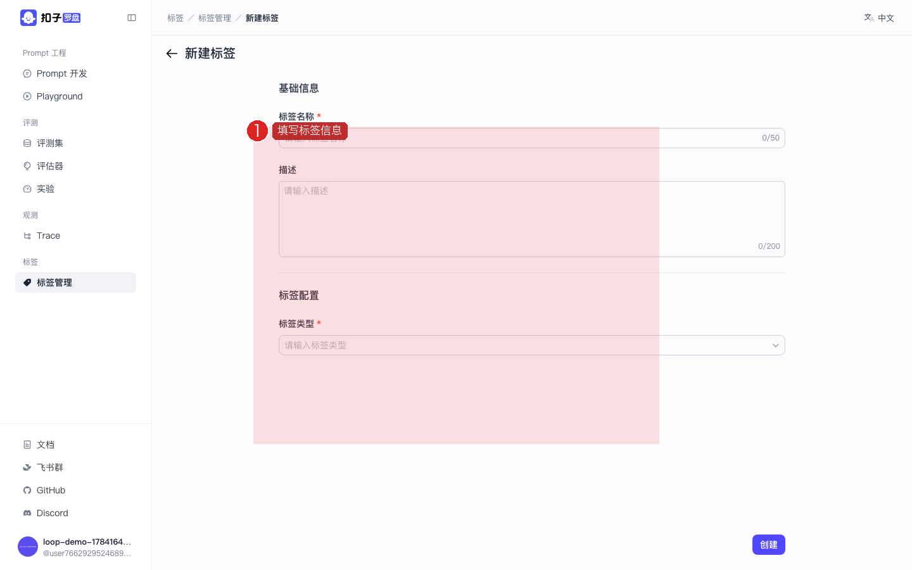
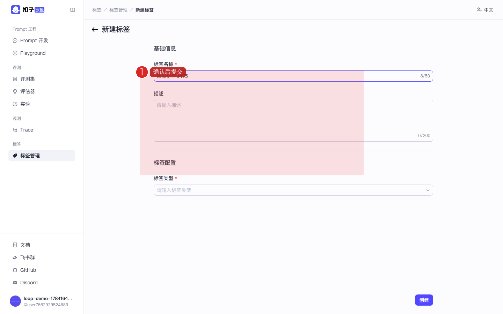
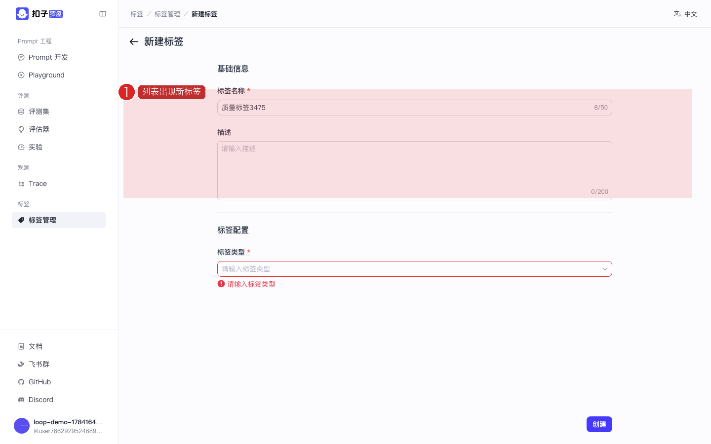

Coze Loop 开源实战 · P06 / 共 8 课 · ≈15 min · 跟做版
P06 · 标签管理：为人工标注做准备
创建标签，供实验详情里人工打标使用。 截图红框为操作重点。上级：总目录。
🎯 本课目标（先读再动手）
- 理解标签 = 人工阅卷时的贴纸，与自动评估器互补。
- 在标签管理里新建至少一个标签。
- 知道之后在实验详情做人工标注时可选用这些标签。
学完怎样算过关：标签列表里出现你创建的名称；你能说清标签和评估器的分工。
图上红色圆圈数字 1、2、3…表示本步操作顺序，请严格按数字从小到大点。数字旁短文是该步要点。做完看每步绿色验收；先读本课目标再动手。
1
打开标签管理
目的：进入标签体系管理页，为人工标注准备「贴纸库」。
作用：自动评估器覆盖不了的主观问题（幻觉、语气等）靠人工打标。标签要先在这里建好，实验详情里才能选用。
- 侧栏点 标签管理
- 进入标签列表页

图：按 1→2：点「标签管理」 → 点「新建标签」。
✅ 验收：面包屑含「标签」。
2
新建一个标签
目的：创建一条可用的标签定义（名称、取值等），加入空间的标签库。
作用：创建成功后，团队在人工阅卷时有统一词汇，便于统计「有多少条被标了某类问题」。
- 点 新建 / 创建标签
- 填写标签名称，例如
质量标签 - 按表单要求配置取值 / 状态（以页面为准）
- 点确认创建

图：数字 1：填写标签信息。

图：数字 1：确认信息后提交（字段名以图上标注为准）。
✅ 验收：提交无报错，回到列表。
3
在列表确认创建成功
目的：确认标签已落库，可被后续人工标注流程使用。
作用：列表可见 = 创建成功。本课到此闭环；真正「贴到某条结果上」通常在实验详情完成。
- 在列表搜索或直接浏览，找到刚建的标签
- 之后在实验详情做人工标注时，即可选用这些标签

图：数字 1：确认列表出现新标签。
✅ 验收：列表至少有 1 个你认识的标签名。